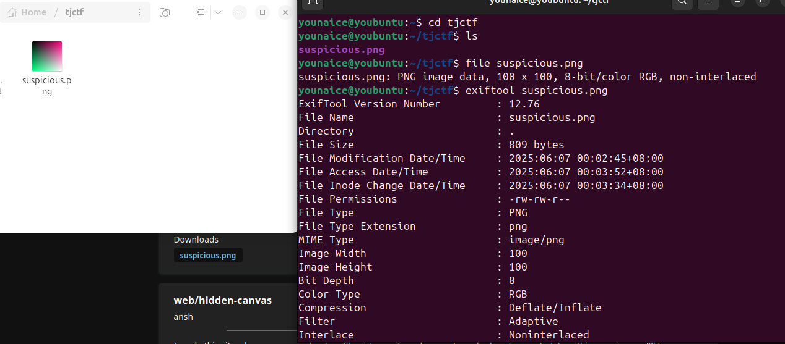
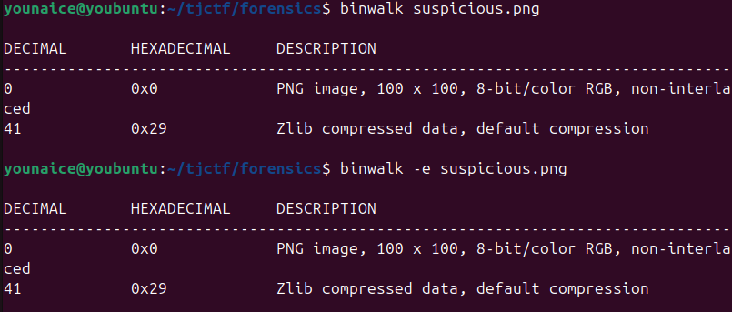
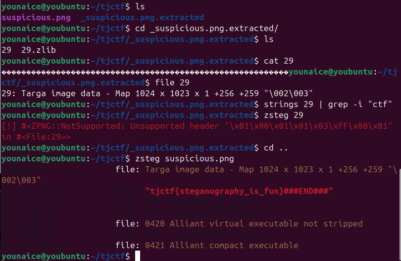

Challenge Description
i found this suspicious image file on my computer. can you help me figure out what's hidden inside?
Writeup Steps
-
We got suspicious.png from the question.Check the file type, then use exiftool to check its metadata

Nothing found
-
Binwalk to check any file that can be extracted.

-
Binwalk to check any file that can be extracted, then got a file 29. There is lots of noise there, and I got nothing when
searching with
Strings. Then I usezsteg, and got the flag successfully.
Flag
tjctf{steganography_is_fun}Conclusion
This challenge is an easy challenge on how to inspect an image given.